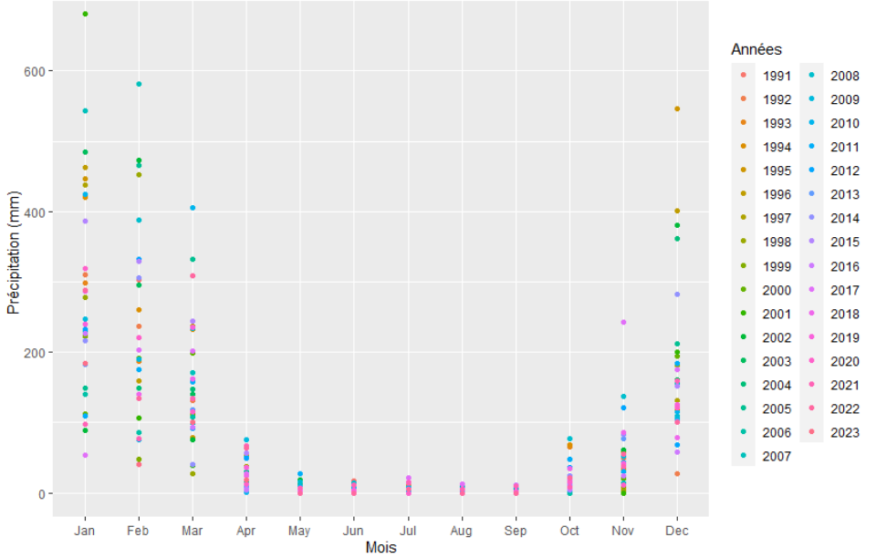
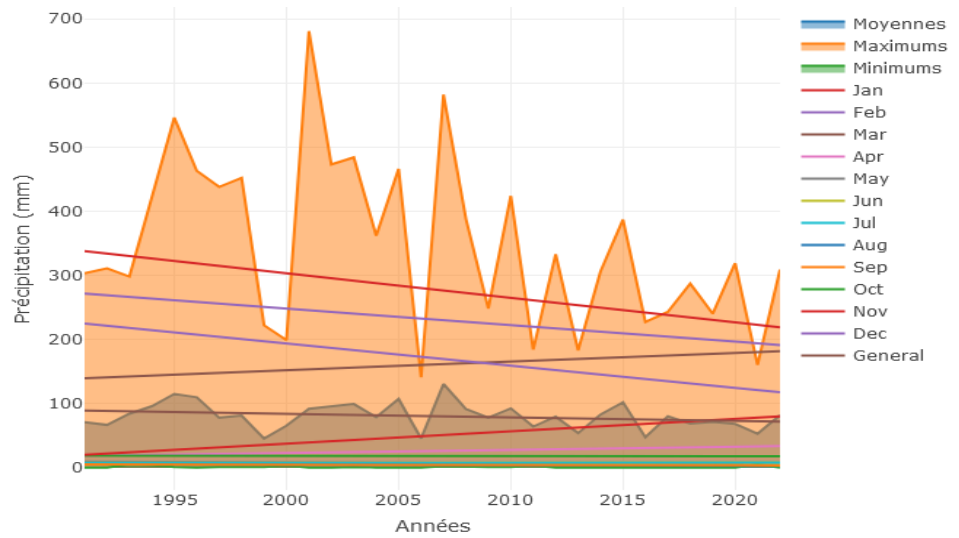

Analyse fréquentielle de la pluviométrie de la région Alaotra-Mangora (Madagascar) dans le but de proposer une actualisation du calendrier cultural du riz
Introduction
Le Centre FOFIFA
Le Centre FOFIFA, ou Centre National de Recherche Appliqué au Développement Rural, est la principale institution de recherche agricole à Madagascar. Créé en 1974 à la suite du départ des instituts français de recherche agricole, elle contribue à élaborer la politique nationale de recherche en matière de développement rural et d’en assurer la diffusion et la capitalisation et développe la recherche thématique de base pour générer des connaissances et techniques pour anticiper les enjeux à venir [1].
Thématique du stage
L’un des principaux enjeux actuels, au niveau national mais également au niveau global, concerne le dérèglement climatique, qui impacte directement les productions agricoles. A Madagascar, le secteur agricole compte pour 30% du PIB et emploie 80% des familles malgaches, selon les chiffres de l’International Fund for Agricultural Development [2]. Et l’une des régions les plus productives, faisant partie des principaux greniers à riz du pays, est la région Alaotra-Mangoro. Située dans la région Atsinanana dans la partie centre-est de l’île et s’étendant sur une superficie de 33 054 km², la production rizicole, selon de rapport du centre FOFIFA de Mars 2015, est de l’ordre de 300 000 T par an [3]. Force est donc de constater qu’une baisse de la productivité de cette région impacterait la sécurité alimentaire ainsi que l’économie de tout le pays. Traditionnellement, les agriculteurs commencent à planter du riz en décembre pour une durée de 4 à 6 mois en fonction des variétés, mais le bouleversement climatique perturbe ce calendrier. Ces effets se caractérisent entre autres par une concentration des pluies sur une courte période et une interruption de ces dernières en pleine saison. L’enjeux de cette étude est alors d’analyser les données pluviométriques de 1991 à 2023 afin de proposer un nouveau calendrier cultural du riz en cohérence avec le cycle végétatif des nouvelles variétés utilisées.
Méthodologie
Le jeu de données rassemble les données pluviométriques mensuelles de la région Alaotra-Mangoro de janvier 1991 à mai 2023, fournie par la station météo de Ambohitsilaozana. Pour évaluer le niveau de précipitation de la zone, nous nous basons sur le Standardized Precipitation Index (SPI), un indicateur statistique comparant le total des précipitations reçues d’une zone en particulier pendant une période de n mois avec la distribution des précipitations à long terme pendant la même période et au même endroit [4]. Les valeurs que renvoie le SPI donnent la sévérité des sécheresses (SPI < 0) et des précipitations (SPI > 0). L’ensemble de l’analyse et les différents graphiques ont été réalisés à l’aide du logiciel R et avec le package “precintcon” pour calculer les SPI, “ggplot2” et “plotly” pour les graphiques. Résultats et Discussions La région se caractérise par un climat tropical chaud et humide, elle comporte deux saisons bien marquées : une saison sèche avec quelques pluies, d’avril à septembre, et une saison pluvieuse, d’octobre à mars (Fig 1).

Traditionnellement, les agriculteurs commencent à cultiver le riz au début du plus fort de la saison humide, en décembre. Cependant les tendances montrent que les précipitations des mois de décembre à février diminuent (Fig 2). Et dans l’ensemble cette diminution est de l’ordre de 0.56 mm par an depuis 1991 à l’exception des mois de novembre, mars et avril, qui suivent une tendance croissante, respectivement de l’ordre de 1.94, 1.36 et 0.48 mm par an en moyenne.

On constate alors que le climat de la région Alaotra Mangoro est en constante évolution, comme le montre la variation du SPI depuis 1991 (Fig 3). Le climat passant progressivement de humide à sec mais tout en restant dans des valeurs de SPI moyen compris entre 0.99 et -0.99, c’est-à-dire, les zones de minimum humide et minimum sec (tab 1).

Cependant le climat semble être plus sec que humide avec un SPI inférieur à 0 comptant pour 51,29 % d’occurrence contre 48,71 % pour l’inverse (tab 1). Une différence notamment due aux minimums secs avec une occurrence de 41,69 %, suivi par les minimums humides avec 34,19 %. Les événements humides modérés et sévères ( SPI entre 1 et 1,99) ont 12,41 % d’occurrence totale et 8,2 % pour les événements secs (SPI entre -1 et -1,99). Quant aux événements extrêmes (SPI ≥ 2 ou SPI ≤ −2), 1,41 % d’occurrence pour les sécheresse et l’inverse est à 2,11 %.
| SPI | Interprétation | Effectif (Janv. 1991 - Mai 2023) | Occurrence (%) |
|---|---|---|---|
| ≥ 2.0 | Extrêmement humide | 9 | 2.11 % |
| 1.5 à 1.99 | Sévèrement humide | 22 | 5.15 % |
| 1.0 à 1.49 | Modérément humide | 31 | 7.26 % |
| 0 à 0.99 | Minimum humide | 146 | 34.19 % |
| 0 à -0.99 | Minimum sec | 178 | 41.69 % |
| -1.0 à -1.49 | Modérément sec | 28 | 6.56 % |
| -1.5 à -1.99 | Sévèrement sec | 7 | 1.64 % |
| ≤ -2.0 | Extrêmement sec | 6 | 1.41 % |
Tableau 1 : Niveau d’humidité et de sècheresse, leur effectif et leur occurrence de janvier 1991 à mai 2023, basés sur le Standardized Precipitation Index (SPI)
Il est à noter que les besoins réels en eau d’une rizière dépendent à la fois de la variété de riz cultivée et de la nature du sol [5]. Sur un sol argileux, la variété la plus utilisée, Makalioka 34 (MK 34), demande en moyenne 130 et 160 mm d’eau par mois pour un cycle végétatif de 6 mois environ. Mais les besoins varient en fonction du stade phénologique de la plante. Elle est particulièrement sensible à la sécheresse au stage de l’initiation florale, et durant la montaison, la floraison et jusqu’au début de la maturation (fig 4 et ref 6). La période la plus critique pour le riz a alors lieu pendant le deuxième mois après la plantation et dure deux mois suivant les variétés. Durant ces périodes les besoins en eau d’une rizière peuvent aller de 4 à 6 mm par jour. Dans un contexte où la saison humide tend à se raccourcir, une variété à cycle long comme la MK 34 n’est plus favorable, d’autres variétés comme SEBOTA et Mailaka le sont car plus résilientes et ont un cycle plus court. Mais en contrepartie, le riz est de moins bonne qualité, limitant son utilisation par les agriculteurs [3 et 7].

Conclusion
Le climat de la région Alaotra-Mangoro se modifie indéniablement, une baisse notable des précipitations est observée en pleine saison culturale bien que, dans l’ensemble, la région semble toujours favorable à la culture du riz. La majorité des mois de l’année sont de moins en moins humides, à l’exception des mois de novembre, mars et avril. Nous permettant ainsi de proposer d’avancer le calendrier cultural d’un mois, en novembre, pour éviter que le riz souffre de la sécheresse durant ses premiers stades végétatifs.
Une solution simple et facile à mettre en œuvre, et garantit de meilleurs résultats avec l’utilisation de variétés à cycle court ou moyen. Car l’initiation florale et la floraison, ayant lieu plus tard au cours de la croissance du riz, sont aussi particulièrement sensibles à la sécheresse. Et la période favorable à sa culture est comprise entre novembre et mars, soit 5 mois. En somme, pour adapter la région Alaotra-Mangoro aux changements du climat, nous préconisons de commencer la plantation du riz en novembre et d’utiliser des variétés à cycle court.
Bilan personnel
Ce stage m’a permis de découvrir le monde de la recherche et plus particulièrement la recherche dans une approche globale. C’est-à-dire, prendre en compte des besoins de toutes les parties prenantes d’un projet, en particulier des bénéficiaires, dans le contexte qui leur est propre. J’ai pu alors entrer en contact et faire le lien entre ces parties, j’ai ainsi à mon échelle participé un projet commun. Ce stage m’a aussi permis de développer des compétences en analyse et modélisation de données avec le logiciel R.
Références
- Site officiel du centre FOFIFA ; https://www.fofifa.mg/?page_id=2 ; consulté le 05/06/2023.
- International Fund for Agricultural Development ; Madagascar ; https://www.ifad.org/fr/web/operations/w/pays/madagascar ; consulté le 05/06/2023.
- Dr RAKOTOARISOA Jacqueline et RABESON Raymond ; “Analyse comparative et participative des techniques et technologies de productions rizicoles de la région d’Alaotra Mangoro et dans les autres greniers de Madagascar” ; Centre FOFIFA ; mars 2015.
- Product fact sheet : SPI – Africa ; European Commission ; mai 2013 https://edo.jrc.ec.europa.eu/documents/factsheets/factsheet_spi_ado.pdf ; consulté le 07/06/2023.
- Pr RAZAFINJARA Aimé Lala ; “Système de Riziculture Intensive (SRI)” ; rapport du centre FOFIFA ; 2012.
- Radios Rurales Internationales ; Fiche documentaire : Production et activités post-récolte du riz au Ghana ; James Karuga ; 5 octobre 2021 ; https://scripts.farmradio.fm/fr/radio-resource-packs/ensemble-des-ressources-pour-la-radio-agricole-119/fiche-documentaire-production-et-activites-post-recolte-du-riz-au-ghana/ ; consulté le 10/06/2023.
- RANAIVOSON Andry ; “Contribution à la lutte agroécologique contre les lepidoptères, foureur de tige de riz cultivé en bas fond et sur bruli dans la région d’Ankepaka Manankara” ; mémoir pour l’obtention du diplome d’étude approfondie en sciences biologiques appliquées, soutenu le 24 Juillet 2009 ; Université d’Antananarivo ; http://biblio.univ-antananarivo.mg/pdfs/ranaivosonAndry_SN_M2_09.pdf
Mots clefs
Précipitations _ Agriculture _ Analyse Fréquentielle